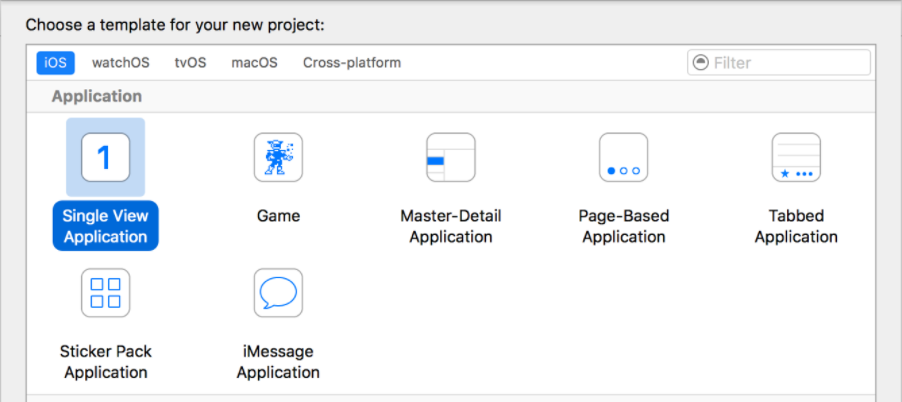

Developing an iOS App
iOS apps rely on the Swift programming language and a macOS of 10.11.5 or later.
You can download the Swift language here. You will also need to download Xcode, Apple's development platform for iOS apps. You can download this here.
Xcode
In the welcome window of Xcode, click Create a new Xcode project.
After creating a new project, select iOS at the top of the window. In the Application section, select Single View Application and then click Next.

In the next window, use the following to name your app and choose additional options:
- Product Name: AppName
- Team: If this isn't automatically filled out, set it to None.
- Organization Name: The name of your organization or your own name; you can leave this blank.
- Organization Identifier: Your organization identifier, if you have one. If you don’t, use
com.example. - Bundle Identifier: This is a value that is automatically generated based on your product name and organization identifier.
- Language: Swift
- Devices: Universal; this means one app will run on both the iPhone and the iPad.
- User Core Data: Unselected
- Include Unit Tests: Selected
- Include UI Tests: Unselected
After you add those changes, click Next. Xcode will ask you to select a location to save your project, then you can click Create. Your new project will open up in the Xcode workspace window.
Running Your App
In the Xcode toolbar at the very top of the page, click iPhone 7. Choose the simulator and not an iOS device so you can run it without plugging a real device in.
Click the Run button  in the
top-left corner of the toolbar (it looks like a play button). Enable developer mode when prompted by
Xcode.
in the
top-left corner of the toolbar (it looks like a play button). Enable developer mode when prompted by
Xcode.
The app simulator will start automatically, opening in the iPhone mode you specified. It will first show your app's launch screen, then it will transition to the app's main interface. (Note: since we chose a Single View Application template, the launch screen and main interface are the same thing.)
You can quit the simulator by clicking Simulator > Quit Simulator, or by pressing Command-Q.
Editing Your App
To write the code in your app, navigate to your app folder in the navigation bar on the left-hand side of the window - it will be named the same as your app. Open the folder, and click on the ViewController.swift file.
To edit your UI, select the Main.storyboard file under your app's folder. This will open the Interface Builder, Xcode's visual interface editor. The background of the storyboard is the canvas, and you can use the canvas to add and arrange user interface elements.
Once you've made your changes, save and run the app the same as before. You now have a simple iOS app!